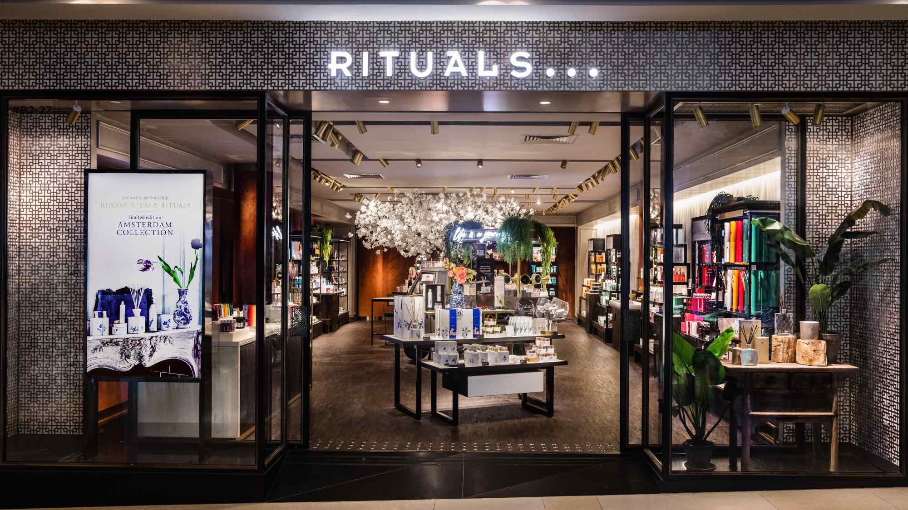
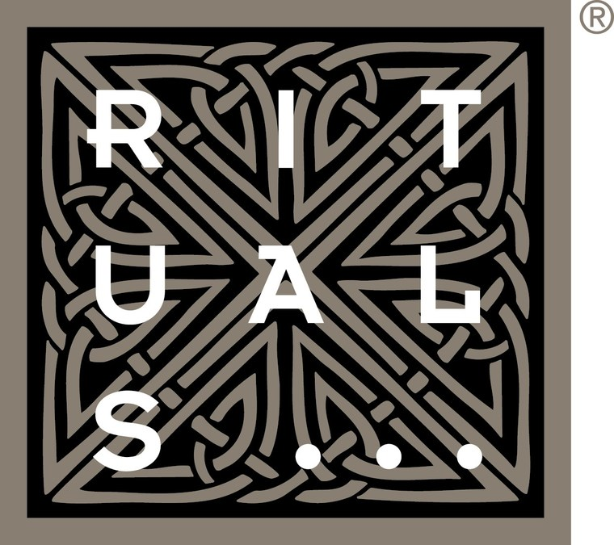

Banque Populaire Rives de ParisMission Offre & Tarification – analyse des gammes et vision stratégique.Gammes Visa & campagnesCartes Classic, Premier, Platinum, Cristal et campagne SwatchPAY!.Travail transverseOffre, innovation, juridique, conformité, monétique et CRM en boucle courte.
Fin 2024 – Fin 2025
Rituals
Conseiller luxe · CDI temps partiel
Relation client premium, ventes conseil et rituel personnalisé
Gestion des animations boutique et mise en scène des produits phares
Organisation emploi du temps CDI temps partiel en parallèle du cursus
Résultat : top 3 des ventes boutique plusieurs semaines et
fidélisation d’une clientèle internationale (NPS 9/10).

Produits phares RitualsPrésentation premium, scénographie boutique et rituels signature.

Identité Rituals CosmeticsExpérience retail haut de gamme, ambiance sensorielle et storytelling.Posture boutiqueUniforme, posture de conseil et expérience client en boutique premium.
2022 — Aujourd’hui
Projets digitaux & entrepreneuriaux
Product / UX
Cafet’Up – application de cafétéria en ligne
Wireframes, architecture, business model, respect RGPD
Designs graphiques (Canva, Illustrator, InDesign)
Développement de pages web & portfolio personnel
Résultat : démonstrateur validé par le corps professoral, +6
compétences digitales (montage photo, logos, code, vidéo, appli mobile, data).
Approche
Ce qui me guide sur le terrain
Orientation client
Comprendre les irritants, proposer des solutions tangibles et partager les
insights avec les équipes centrales.
Pragmatisme data
Benchmarks, segmentations, analyses Excel avancées : j’utilise les données
pour éclairer les décisions.
Culture produit
Toujours penser expérience de bout en bout : du cadrage à la formation des
équipes, en passant par les supports et la communication.